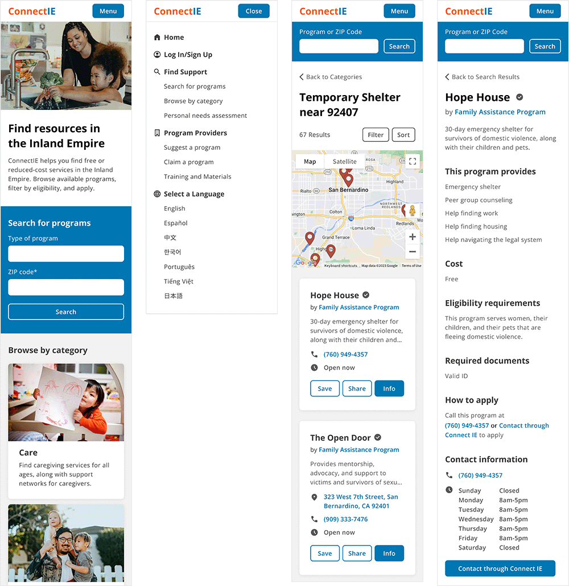

Overview
About this project
This was a side project I took on while at CSUSB. I conducted research, created wireframes and prototypes, and tested the design. In my research, I was able to work with real stakeholders at Inland Empire Health Plan (IEHP) who were involved in creating the original site and who currently use it in their work to support IEHP members.
The Problem
Programs like Medi-Cal and CalFresh exist to meet the needs of people with low-income, but people need more than healthcare and food. Thankfully, there are community organizations that work to fill in the gap and address these needs in the Inland Empire. The problem is that these organizations are hard to find. When a person finds themself in need, tracking down assistance can feel frustrating and hopeless.
Connect IE was created to facilitate this process. The website serves as an online directory of services, from housing assistance to job training and school supplies.
Screens from the current Connect IE mobile site.
It gets the job done in its current state, but it has some usability problems and a visual design that most users find unpleasant and untrustworthy. Because of these issues, some features are difficult for users to find. At the same time, there are features that users won't use because they don't trust the site with their personal information.
The Solution
To improve Connect IE's usability, I restructured the search flow, organized page content, and added menu navigation. To increase user trust in the site, I improved the visual design with accessible type, a consistent design system, and welcoming photography.

Redesigned screens of the Connect IE mobile site. Jump to final design.
The redesigned site is easier to use and gives users better control over how they want to search. Users think the redesign is friendly, official, and trustworthy.
Research
Understanding Connect IE
To learn about the site and its goals, I started my research by interviewing stakeholders at IEHP.
Business Goals
- To make the community aware of services that exist in the Inland Empire
- To address the needs of the community that can't be met by government services
What does a successful user experience look like?
- The user knows about Connect IE.
- The user has a need.
- They use Connect IE to find a local service.
- The user has their need met.
Understanding Users
Connect IE has three types of users: community organizations who upload their services to the site, social workers who use the site to help their clients, and individuals who use the site to address their personal needs.
Connect IE's goal is to give individuals the ability to find local services, so I chose to focus on the end user. Based on my interviews, I learned that most of these users:
- Are low-income
- Are middle-aged or older
- Don't have access to a desktop computer
- Are seeking childcare, shelter, clothing, or transportation
Based on Connect IE's business goals and end users, I decided to focus on the search flow of the mobile website.
Evaluating the Current Design
Website Analysis
Before testing with real users, I needed to analyze it from my point of view. I outlined three problem areas to explore in the usability study:
- It doesn't follow design patterns, so it can be confusing to use.
- It's disorganized. Information is repeated, missing, or in the wrong place.
- It doesn't look trustworthy. If users don't trust the site, they won't use it.
Some issues with the current design: CTA button without context, inconsistent button rows, program information drops down into search results, and redundant information.
Usability Study
To see how it performed in real life, I conducted a usability study with six people.
On average, this is how users rated Connect IE:
“It looks strung together.”
Visuals were the biggest pain point for users. They thought the site looked unprofessional, pointing out inconsistent colors and illegible text.
“The worst thing is how unorganized it is.”
Users were also confused by the organization of content on pages. They noticed buttons and fields without context, repetitive information, and inconsistencies between elements they expected to be the same. When programs listed multiple locations, some users thought they were looking at new entries in the search results.
“You have to pay attention and look at things or else you'll miss stuff.”
Some features were hard to find. Most users couldn't find categories, while half couldn't find the search filters.
“I don't want you to have my information.”
Users had low trust in Connect IE because of its visual design. Seeing its association with IEHP reassured them, as well as being able to use the site without creating an account.
Contextualizing the Data
The next step was to put all of this information in context.
I revisited my stakeholders to create journey maps. We started with a high level view showing where Connect IE might fit into the life of an end user. Then, we made a journey map focusing on their step-by-step use of Connect IE.

Journey map showing the step-by-step use of Connect IE.
The journey maps helped identify opportunities to explore in the redesign, but they also brought up a new insight.
Users already know what they need before they use Connect IE
Based on the usability study, I thought that category navigation would be really important. But if users already know what they need, navigating through categories could be extra work. How important is browsing by category in this context?
Competitive Analysis
What might users expect from a site like Connect IE? I did a competitive analysis to see how similar sites approach visual design, organization, discoverability of features, and user trust.
Screens from similar sites: Community Relay, Kaiser Permanente, Inland SoCal 211, and BenefitsCal.
Competitors all took different approaches and no one site did everything perfectly— some had too much text, some had too many drop-downs, and some weren't designed responsively. On the positive side, I noticed straightforward UIs, strong hierarchy, menu navigation, and welcoming photography. I also noticed that some sites offered categories alongside keyword search, which would work for any user's preference.
Design
Ideation
I sketched out multiple wireframes for each page, exploring the opportunities identified in my journey map.
These were my main goals:
- Improve the organization of content by grouping related information.
- Make categories discoverable by including them on the home page.
- Meet user expectations by adding a menu and opening buttons to new pages.
- Structure content on the home page to make Connect IE's mission transparent.
Prototype, Test, Iterate
I wanted to get some feedback at this stage, so I created lo-fi prototypes and started testing with users.
We tested a few different iterations to find the search flow and page layouts that made the most sense. These tests also answered my question about categories and keyword search.
“I don't want to type a keyword and it not come up because I used the wrong word.”
As I tested with more people, I found that everyone preferred to start their search with categories. This approach helped them feel certain that they were really seeing all of the options that Connect IE had to offer in that category.
Increasing Fidelity
Visuals and trustworthiness were the other pain points for users, so the next step was to focus on creating a professional and welcoming UI.
I took pointers from California's Visual design style guide, which prioritizes accessibility, trustworthiness, and friendliness in designing for the public.
These were my goals:
- Improve legibility and hierarchy with an accessible font family and type scale.
- Create a professional look by using consistent spacing and styling.
- Increase user trust by including photography on the home page.
More Testing
Next, I tested the hi-fi design with users.

This is how they rated Connect IE after the redesign:
"It's a legit site that can help me."
Users had the most to say about the new visual design. The most common theme was that the redesign looked official. They said it looked like a government or non-profit website, which they would expect and trust with their personal information.
"It feels like they care."
On top of looking official, users also thought the new design was welcoming and friendly, which they attributed to the photos on the home page.
"Do I really qualify?"
As we tested the redesign, the only concern users had was the quality of information. Users wanted to be certain that they qualified, but providers didn't always list specific eligibility requirements.
This isn't an easy fix, because providers control the content on their pages. (A solution might be to redesign the process of inputting information and encourage specificity.) For now, this concern tells me I met the goals of this redesign— all of the other problems are out of the way and users can now focus on the information.
Final Design
Redesigned category search flow. View in Figma.
Accessible Type Scale
Before, Connect IE had body copy as small as 14px. The lack of hierarchy also made it difficult for users to tell what type of information they were looking at.
The redesign has a base size of 18px for body copy and strong hierarchy to make groupings clear and information skimmable.
Consistent Design Patterns
Before, many buttons on Connect IE opened drop-down menus. In the search results, that meant users had to scroll down to read information and scroll back to apply. The site also lacked menu navigation, so users could only move forward or backward through the site.
In the redesign, buttons open to new pages so that search results aren't interrupted. When programs have multiple locations, it's clear to users because they know they're on that program's page.
Welcoming Home Page

Before, Connect IE's home page greeted users with a floating CTA button and centered on the keyword search feature. Introductory information about the site was at the bottom of the page.
The redesigned home page welcomes users with an introduction and uses photography to humanize the site and illustrate the services that are offered.
Discoverable Categories
Before, users were only able to find categories if they used the keyword search with just a ZIP code.
In the redesign, the most popular categories are featured on the home page, as well as a button to see all categories. With the addition of the menu, users can also navigate to categories from anywhere on the site.
Streamlined Search Result Cards
Before, the search result cards had five possible buttons, depending on the features available for each program. If you couldn't apply or contact through Connect IE's forms, these buttons would repeat the contact information in the card or tell you to apply by contacting the program (and repeating the contact information in the card).
The redesigned search result cards only feature the three buttons that apply to every program. This keeps the button row consistent and avoids repeating information and annoying users. If you can apply or contact through Connect IE, these buttons are located on the program's page.
Reflection
What I learned
In this project, I saw firsthand how important aesthetics are to users. This made the redesign a challenge— Connect IE is a directory, so most of its pages are utilitarian and serve to convey information. There aren't many opportunities to incorporate the visuals that users value so much. Because of this, I was really intentional with the copy and photography on the home page to orient users before entering the text-only pages of the site.
Next Steps
If I were to take this project further, I would want to focus on form design. There are many forms throughout the site that allow users to share, contact, and apply to programs. The Personal Needs Assessment is a major feature that matches users with programs based on their answers to demographic questions. I noticed that many of these forms are long and intimidating, but addressing them wasn't the focus of this project.
References
- State of California. Visual design style guide. California Design System. https://designsystem.webstandards.ca.gov/style/design/